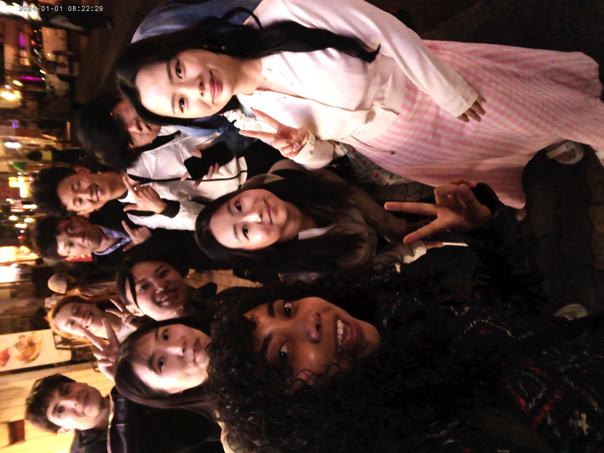

STAYING ACCOUNTABLE
2026.04.24
Hello blog! Unfortunately, I do not have much time to write today as I was hanging out with friends for the entire day and now I need to sleep (it is 10pm now). Tomorrow, we are going to a a flower garden filled with pretty blue flowers. I am excited! I will share a photo of us all together:

Happy three weeks of blogging! Woohoo! BTW, I haven’t forgotten about what I’ve promised from the past three days. At this point, you’ll see it when you see it because it’s still very much in progress. じゃね！